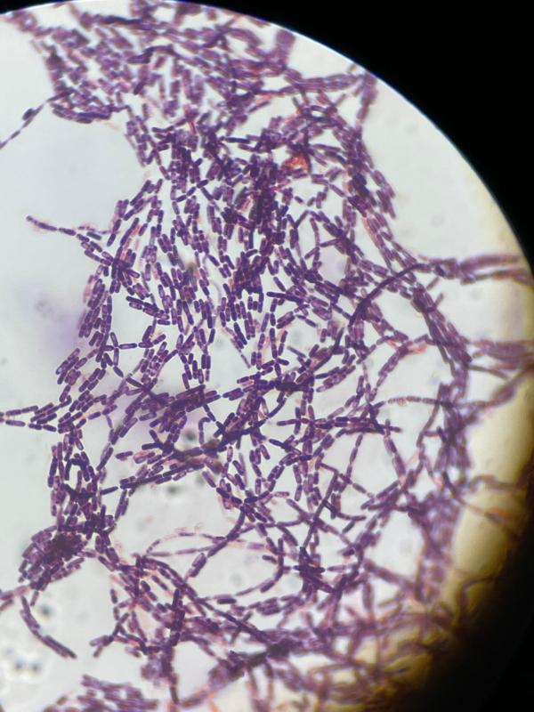

This internship represented an early laboratory experience focused on microbiological methodologies, providing practical training in microbial cultivation, identification techniques and analytical procedures.
The experience allowed the development of fundamental skills in microbiology, including sterile techniques, preparation of culture media, microbial growth analysis and microscopy-based observations, forming a solid foundation for subsequent biological research experiences.
Laboratory Internship
University of Salerno
Fisciano, Salerno, Italy
April 2022 – June 2022
Microbiology / Biotechnology / Laboratory Sciences
Microbial cultivation, bacterial and fungal analysis, microbiological techniques
The internship involved practical training in microbiological procedures applied to bacterial and fungal organisms. Activities included the preparation of liquid and solid culture media, microbial cultivation, bacterial growth monitoring, microscopy observations, microbial biomass analyses, and microbial quantification.
Through hands-on laboratory work, I acquired essential skills in aseptic techniques, bacterial inoculation, streaking, Gram staining, antibiosis testing, and environmental sampling. The experience enhanced my understanding of microbial processes and laboratory organization, providing a strong foundation in microbiological methodologies.
Preparation of solid and liquid media
Sterile laboratory procedures
Bacterial inoculation
Microbial isolation
Plate cultivation
Gram staining
Fungal staining
Microscopic observation of microorganisms
Microbial biomass estimation
Microbial counting
Bacterial growth kinetics
Soil sampling
Plant-associated microbial sampling
This experience provided a strong foundation in microbiological laboratory practices and improved my ability to work with microorganisms under controlled laboratory conditions.
I developed precision and attention to detail, laboratory organisation skills, a deeper understanding of microbial growth processes, the ability to follow experimental protocols, and familiarity with microbiological instrumentation.
This internship represented an important step in developing laboratory skills that later supported further biological research experiences. The practical training in microbiological techniques provided a solid foundation for subsequent work in microbial analysis and environmental microbiology.